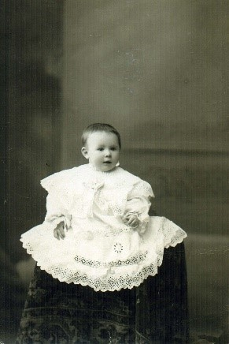
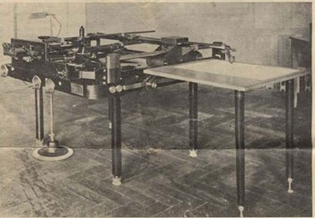

El padreManuel Ordovás de la Peña

Mi padre era Manuel Agustín Francisco Mateo y nació en la casa de sus padres (Santa Engracia 66 – 1º) en el Distrito de Chamberí (Madrid) a las 16:30 del día 23 de septiembre de 1912 y falleció en Madrid el día 5 de diciembre de 1965 a causa de una tuberculosis pulmonar. Sus padres Jesús María Ordovás Galvete, natural de Belchite (Zaragoza) y Cristina de la Peña Gómez, natural de Madrid (aparentemente el segundo apellido era Gómez de la Cerda, prima de los Duques de Medinaceli y por lo tanto descendientes de los Infantes de La Cerda, nietos de Alfonso X El Sabio)
El bisabueloAgustín Ordovás Perún

Jesús María Ordovás Galvete nació a las cuatro de la mañana del día 16 de junio de 1882 en la calle Nueva número 11 de Belchite. Era nieto, por vía paterna de Lucio Ordovás (propietario) natural de Letux y de Bibiana Perún, natural también de Belchite y por línea materna de Francisco Galvete, natural de Huechaseca y Catalina Terrén, de Magallón
Sus padres, Agustín Ordovás Perún, natural de Belchite y Dolores Galvete Terrén, natural de Magallón (Zaragoza).
Agustín Ordovás Perún, en un principio, por las razones que fueran y fallecida su mujer se ordenó sacerdote y tiempo después fue nombrado Canónigo de la Catedral de Tenerife el 26 de junio de 1905, ya que
“En el seminario de Zaragoza cursó y probó tres años de Filosofía y otros tres de Teología, habiendo recibido el título de Bachiller en Artes en el Instituto provincial de dicha ciudad.
Previos los ejercicios de reválida en la Universidad de Valladolid, recibió en 8 de agosto de 1877 certificado de aptitud para ejercer la fe pública. Por Real Orden de 14 de diciembre de dicho año fue nombrado Escribano de Retenciones del Juzgado de primera instancia de Belchite, cargo que renunció en 3 de abril de 1880.
En 10 de dicho mes y año tomó posesión de la Secretaría del Ayuntamiento de Villamayor, cargo que desempeñó hasta el 30 de junio de 1881.
En marzo de 1882 fue nombrado secretario del juzgado de Magallón, cargo que desempeñó hasta julio de 1885.
En las Témporas de San Mateo de 1885 recibió el Sagrado Orden del Presbitariado.
En el concurso de méritos de la Diócesis de Zaragoza de 1887 obtuvo el emirato de Perdiguera, del que tomó posesión el 14 de febrero de 1888, habiendo regentado con anterioridad varias parroquias. En febrero de 1891 fue nombrado cura ecónomo de Montejo de la Sierra, cargo que estuvo hasta el 28 de abril de 1892. En noviembre de 1881 hizo concurso general que le fue aprobado y finalmente en 30 de abril de 1892 tomó posesión del cargo de Coadjutor primero de la Parroquia de Santa Cruz, de Madrid”
Gaceta de Madrid, número 180, 20 de junio de 1905
Y en Madrid, fue confesor personal de la Marquesa Viuda de Manuel Ribadeneyra, de la imprenta que había en la Cuesta de San Vicente y del periódico ABC.
Está enterrado en la Sacramental de Santamaría – nicho 4º fila 528 sección 2.
Agustín tuvo un hijo; Jesús María Ordovás Galvete, nacido en Belchite (Zaragoza) el 16 de junio de 1882.
Según consta en su hoja de servicios, ingresa en el ejército el 1 de agosto de 1898 (con 16 años) como alumno del Cuerpo de Ingenieros, en 1902 asciende a segundo teniente de ingenieros por promoción, en 1905 Primer Teniente, en 1911, Capitán y en 1920 Comandante de Ingenieros por antigüedad.
El abueloJesús M.ª Ordovás Galvete

En el curso 1924/1925, su hijo Manuel se examina por enseñanza no oficial de Bachillerato en Algeciras, dependiente de la Universidad de Sevilla. En los cursos 1922/23 y 1923/24 cursa los dos primeros años en el Instituto Nacional de 2ª Enseñanza de Guadalajara.
En 1931, estando destinado en Ceuta es destinado a prestar sus servicios en el Regimiento de Telégrafos siendo nombrado Jefe del detalle de la Escuela Práctica, prometió por su honor servir bien y fielmente a la República haciéndose cargo de la Jefatura de Instrucción y pasa a la situación de disponible forzoso trasladándose a Madrid y en esta situación se le concede la Pensión de la Cruz de la Orden de San Hermenegildo.
El 31 de julio de 1931, pasa a ser Comandante retirado extraordinario hasta que el 22 de febrero de 1941 reingresa como Comandante en la Escala Complementaria. (Durante este periodo asciende a Teniente Coronel -27/marzo/1932- y Coronel -8/marzo/1938).
Era además un excelente ingeniero y delineante, siendo varios años profesor de Topografía y Geodesia en la Escuela de Ingenieros de Guadalajara y miembro de los tribunales de acceso al cuerpo de Ingenieros. Inventó además un Cartógrafo automático de planos utilizando la fotogrametría estereoscópica.

Este invento tuvo sus controversias con la empresa suiza Kern llegando al punto que Jesús vendió las joyas y el piso de la familia y se trasladó a la oficina de patentes de Bruselas para intentar que no le fuese arrebatada su patente. Tras un largo proceso el invento se quedó como “Cartógrafo Ordovás-Kern”
Jesús tuvo 6 hijos: Manuel nacido el 21 de septiembre de 1912, Agustín el 21 de agosto 1915 y Carlos el 13 de diciembre de 1918, nacidos los dos en Madrid. Eduardo, nacido en mayo de 1919, Rafael nacido el 14 de octubre de 1920, María Cristina nacida el 3 de agosto de 1922, los tres nacidos en Guadalajara.
La abuelaCristina de la Peña Gómez

Cristina de la Peña Gómez, su mujer, nacida el 7 de enero de 1888 era hija de Manuel de la Peña Azcona, nacido el 5 de Abril de 1864 en Madrid (hijo a su vez de Francisco de la Peña y Gómez Marañón, natural de Carranza -1836- y Cristina Azcona Pérez natural de San Lorenzo -1834-, que contrajeron matrimonio el 9 de agosto de 1863 en San Lorenzo -Madrid- ) y de Gila Rosa Gómez (de la Cerda) Martín Donaire, nacida en Nambroca (Toledo).
Cristina Azcona Pérez contrajo matrimonio, una vez que su marido Francisco falleció a causa de una hepatitis crónica, con Cipriano del Fresno Carús, con el que no tuvo hijos.
Comentaba mi madre que era un tanto orgullosa de sus familiares (era familia de los Marqueses de Medinaceli) y de su apellido (De la Cerda) por lo que consideraba que era necesario comunicar la visita a su casa con anterioridad.
Además, era muy cafetera (al igual que su hijo Manuel, que se llevaba un termo de café al trabajo cuando estaba trabajando en la Naval y lo acababa entero) tanto es así que un día pidió que le sirvieran un café bien cargado y… perdió el conocimiento de lo cargado que estaba. Sus últimos días los pasó en una residencia de mayores en la Calle Alfonso XI, casi esquina a Alcalá (frente a El Retiro).
Tenía un hermano, Francisco de la Peña Gómez (Peñita) que puso o intentó poner una óptica en la Calle Mayor de Madrid, pero su negocio fue absorbido (parece que en unas condiciones bastante dudosas) por un óptico de fama (Ulloa o Cottet).